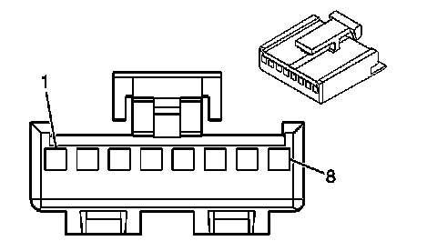
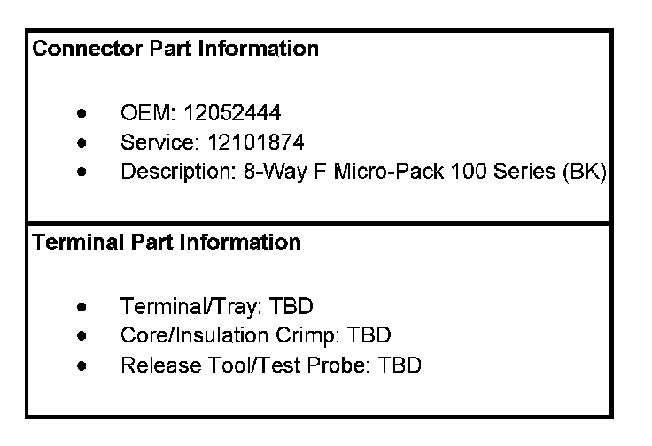
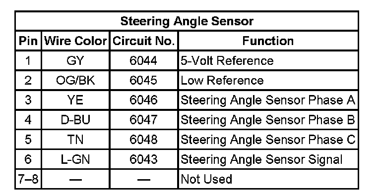

Operation CHARM
: Car repair manuals for everyone.
Home
>>
Cadillac
>>
2007
>>
Escalade ESV AWD V8-6.2L
>>
Repair and Diagnosis
>>
Steering and Suspension
>>
Suspension
>>
Sensors and Switches - Suspension
>>
Steering Angle Sensor
>>
Diagrams
Steering Angle Sensor: Diagrams
Antilock Brake System Connector End Views
Steering Angle Sensor
Steering Wheel Speed/Position Sensor:


Steering Angle Sensor:
